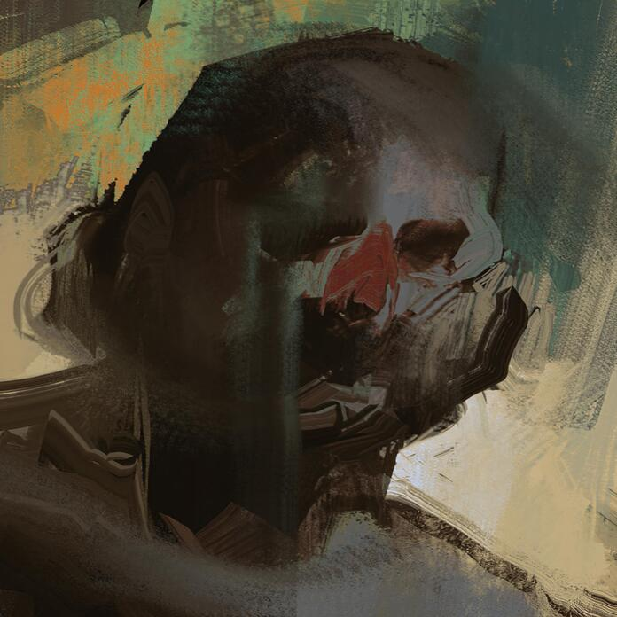

Фритрек и нулевой спринт: Подготовка к работе
<Откровение>
Это было самое начало пути. На этом этапе важно было проникнуться
основами и настроиться на учёбу. И, возможно, подумать, как новые
знания могут повлиять на ваше будущее.
Ты просыпаешься в своей обыденной комнате, стенки которой словно
обсыпаны слоем пыли неизученных знаний. В голове роется какая-то
пустота, словно ты потерял свою книгу жизни. В одном углу стоит стопка
неразобранных учебников, словно предвестие того, что ты готовишься к
великому путешествию в мир знаний. Ты оглядываешься вокруг, и твои
глаза встречают полку с разноцветными тетрадями. В них засела тишина
непрочитанных строк и возможностей. Кажется, что каждая страница — это
ворота в новый мир, где тебе предстоит освоить непроглядные территории
теорий и практик. В углу комнаты размещен старый компьютер, словно
компаньон в твоем путешествии. Его клавиши напоминают о бескрайних
возможностях интернета и глобальной базы данных, где ты сможешь нарыть
множество сокровищ знаний. Пока ты стоишь в своей комнате, словно
перед выбором жизненного пути, в ушах звучит тихий голос раздвоения
личности. Один шепчет тебе о возможных трудностях и перипетиях,
которые могут подстерегать на этом пути. Другой голос, напротив,
бурлит энтузиазмом и жаждой знаний, призывая к смелости и решимости.
Сейчас ты стоишь на пороге своего образовательного путешествия, и твои
решения определат будущее. Какие тетради ты раскроешь? Какие ворота
знаний ты откроешь? Весь мир твоих учебников словно маячит перед
тобой, и каждая страница — это шаг в темную неизведанную глубину, где
ты можешь найти ключи к своему будущему.
1 спринт: Я — чистый лист

<Эксплорация>
На первых этапах мы работали со страхами и сомнениями, которые часто
испытывают новички. Один из них — страх перед чистым листом. Это,
конечно же, намного сложнее, чем боязнь куска бумаги. Часто за этим
ощущением скрываются более глубокие вопросы: с чего начать? а вдруг
будет слишком сложно? что, если я не справлюсь?
Ты стоишь перед пустым экраном, словно перед абсолютной неизведанной
территорией. Воздух наполняется тревогой, и твои пальцы колеблются над
клавишами, словно танцуя в ритме неопределенности. Чистый лист — это
как белая бескрайность, и твой разум сражается с волнением, что может
произойти, когда первые слова коснутся его поверхности. Твои глаза
скользят по экрану, словно в поисках подсказки или напутствия, но
тишина висит в воздухе, словно глубокий вздох перед прыжком в
неизвестность. Голос раздвоения личности становится ярче, один шепчет
тебе о потенциальных опасностях, о том, что этот пустой лист может
оказаться слишком огромным, чтобы заполнить его своими мыслями. Другой
голос, наоборот, призывает к смелости, утверждая, что в каждой
черточке этого листа могут скрываться твои идеи, готовые разцвести в
уме читателя. С каждым мгновением твоя рука все ближе к клавишам,
словно краешек пальто, за которым таится таинственный мир. Страх перед
чистым листом — это страх перед собой, перед своей способностью
воплощать мысли в слова. Но, как в детективном расследовании, важно
приступить к делу, несмотря на неизвестность, и открыть новую главу,
которая может оказаться более захватывающей, чем кажется на первый
взгляд. И вот ты начинаешь писать, словно разгадывая код,
расшифровывая свой внутренний мир и впуская его на белый лист. Каждое
слово — это шаг вперед, в неизведанные глубины твоего творчества, и ты
осознаешь, что страх перед чистым листом — всего лишь первый шаг к
тому, чтобы открыть перед миром свой уникальный рассказ.
1 спринт: А если не получится?
<Триумф>
Первый проект — позади! Но это всё ещё самое начало пути. Радость
могла быстро померкнуть и смениться ожиданием провала. Или вы,
наоборот, могли вдохновиться успехами и поверить в себя.
Ты стоишь перед завершенным проектом, словно на пике виртуальной горы,
достигнутой твоими кодовыми усилиями. Экран монитора сверкает
отражением твоего первого триумфа, и сердце замирает на мгновение. Это
был танец с веб-технологиями, где каждый пиксель — это шаг вперед, в
мир виртуального творчества. Голос раздвоения личности вновь раздаётся
в ушах. Один голос предостерегает от эйфории, напоминая, что путь в
веб-разработке — это не один проект, и трудности могут подстерегать в
будущем, словно скрытые тени на танцполе. Другой голос, напротив,
наполняет тебя энтузиазмом, подчеркивая, что этот проект — всего лишь
первый аккорд в симфонии твоего профессионального роста. Ты ощущаешь в
себе движение, словно ритм диско, который поглощает весь твой
творческий потенциал. Радость и удовлетворение от завершенного проекта
становятся твоим танцем с успехом. И в этот момент ты осознаешь, что
успех — это не только цель, но и танцевальное движение вперед, в
бескрайний мир веб-разработки. Ты можешь либо остаться на вершине этой
виртуальной горы, поглощенный своим достижением, либо использовать его
как трамплин для новых танцев, новых проектов, словно вечеринка, где
музыка не затихает, а лишь переходит в новый трек. И в этот момент ты
выбираешь продолжение своего кодового пути, зная, что каждый проект —
это новый танец, и ты — танцор в бескрайнем мире возможностей
веб-разработки.
2 спринт: Погоня за идеалом
<desigions>
На этом этапе вы уже достаточно разбирались в основах вёрстки, чтобы
понять, как много ещё впереди. Вы могли попытаться погнаться за
идеалом и понять, что он недостижим. А, может, вы вовсе и не
подвержены перфекционизму и вместо того, чтобы сделать идеально,
старались просто сделать.
Ты смотришь на свой код, словно на паутину возможностей, которая
расстилается перед тобой. Видишь каждый тег, каждую строчку CSS, и
твои глаза блуждают по экрану, словно детектив, ищущий ключ к
совершенству. Но с каждым движением мыши и каждым нажатием клавиши на
клавиатуре, ты начинаешь понимать, что идеал — это как тень, бегущая
впереди тебя, всегда ускользающая, но манящая своей загадочностью.
Голос раздвоения личности звучит в ушах. Один подсказывает тебе, что
каждый пиксель должен быть на своем месте, каждая линия кода — точно
выверена, словно великое произведение искусства. Это стремление к
совершенству, как если бы ты пытался раскроить само понятие идеала и
вписать его в свой код. Но второй голос призывает к простоте, к идее,
что совершенство — это не только в деталях, но и в самом процессе
создания. Он шепчет тебе, что важно не только делать идеально, но и
просто делать. Каждая строка кода — это шаг вперед, в мир
веб-разработки, и даже если она не идеальна, она все равно приближает
тебя к цели. Ты решаешься оставить за собой стремление к идеалу,
словно перчатки, которые могут оказаться слишком тесными. Твоя
клавиатура становится инструментом, а экран — полотном, на котором ты
создаешь свой собственный кодовый рассказ. И в этом процессе, в этом
мгновении, ты осознаешь, что идеал — это не конечная цель, а всего
лишь точка на бескрайней дороге твоего профессионального роста.
2 спринт: О тех, кто рядом
<Сообщество>
Всё это время вы были не одиноки (хотя, возможно, иногда и
чувствовали, что одни против целого мира). Вас окружали одногруппники,
команда сопровождения и просто близкие люди, которым можно
пожаловаться, если очередной макет просто так не поддавался. Осваивать
что-то новое легче, когда рядом есть единомышленники, не правда ли?
Ты стоишь не в одиночестве, а в центре собственного кодового танца.
Вокруг тебя шевелится команда — твои единомышленники, с которыми ты
разделяешь не только радости успехов, но и боли неудач. Ваши мониторы
сияют, словно дискотечные огоньки, и в этом свете каждый новый макет
становится танцем цифровой графики. Иногда, когда снова одна из твоих
идей сталкивается с непроходимым препятствием, ты обращаешься к своим
одногруппникам. В их глазах ты видишь отражение своих собственных
трудностей, и ты осознаешь, что ты не один в своих стремлениях. Вместе
вы обсуждаете ошибки, делимиты, ищете решения, словно детективы,
исследующие загадочные тропы кода. Ты можешь полагаться на свою
команду, словно на надежную опору в бурю технологических вызовов. Они
становятся поддержкой в моменты, когда твой дизайн кажется слишком
абстрактным, и зеркало экрана становится чем-то большим, чем просто
отражением кода. Иногда вы вместе весело отпускаетесь, чтобы отдохнуть
от напряжения, словно после успешного расследования. Веселые шутки,
позитивный настрой, обмен идеями — все это словно дискотечный ритм,
который поднимает настроение и добавляет вам энергии для новых танцев
с кодом. И, в конце концов, ты осознаешь, что твоя команда — это не
просто согревающий светильник в мире веб-разработки, но и невидимые
нити, связывающие тебя с бескрайней сетью знаний и опыта. С их
поддержкой ты танцуешь в такт кода, словно в пульсе дискотечной
музыки, наполняющей ваши творческие ночи и дни.
3 спринт: Обходные стратегии
<Реинтерпретация>
На этом курсе вы постоянно решали разные задачи. В какой-то момент вам
могло показаться, что решения просто иссякли. Значит, пришло время
посмотреть на задачу под другим углом.
Ты сидишь перед экраном, словно перед головоломкой, чьи кусочки
кажутся настолько запутанными, что начинаешь сомневаться в своих
аналитических способностях. Задача, кажется, превратилась в мрак, и
каждая попытка решения ведет лишь к тупиковому пути. Голос раздвоения
личности возникает в ушах. Один голос настаивает, что все возможные
пути уже изведаны, и ответ просто не существует. Сквозь этот голос
проскакивают тени сомнения, как дым, мешающий взгляду проникнуть в
темные уголки головоломки. Но второй голос, словно детективный
инстинкт, подсказывает, что иногда нужно изменить свой взгляд.
Склонить голову в сторону, под которым ты еще не рассматривал
проблему. Возможно, ответ лежит в тени, а не на свете. И ты решаешься
на новый подход, словно детектив, обследующий место преступления с
новой точки зрения. Словно на танцполе идей, ты начинаешь вращаться,
перебирая разные углы и перспективы. Твой разум словно облако света,
проникающее в темные углы головоломки. И вдруг, словно вспышка в
темноте, ты видишь новый путь, новый способ решения. И в этот момент,
когда ты привносишь свежий взгляд, голос сомнений уходит на второй
план, словно проигравший персонаж в этом танце. Ты решаешь задачу,
словно детектив, разгадывающий загадку, и ты осознаешь, что иногда
все, что нужно, это изменить свой взгляд и найти свет в самых темных
уголках головоломки.
3 спринт: Когда опускаются руки
<Концентрация>
Во время учёбы часто возникает чувство, когда не знаешь, за что
хвататься. Вроде и проектную пора сдавать, и задачи хочется порешать,
и в теории получше разобраться, и жизнь не забыть пожить. В такие
моменты очень нужна концентрация. Вспомните, откуда вы её черпали.
Ты сидишь перед своим столом, словно детектив, окруженный стенами тайн
и неотгаданных загадок. Проекты, задачи, учебные материалы — все это
словно фрагменты сложного досье, и ты сталкиваешься с чувством, что
они начинают беспорядочно перемешиваться в твоей голове. Голос
раздвоения личности снова проявляется. Один голос предлагает заняться
всем сразу, словно пытаясь поймать каждую тень в одиночку. Но второй
голос, словно наставник в танце, напоминает тебе о важности
концентрации. Ты вспоминаешь моменты, когда замедлял темп, когда
сосредотачивался на одной задаче, словно детектив, вникший в детали
расследования. Ты отключал все лишнее, словно темные тени, и смотрел
на свой проект, словно на загадку, которую ты обязан разгадать. В
танце задач и проектов ты находил свой ритм, забывая о времени и
прочих мелочах. Твой мозг словно освещен дискотечными огнями, и каждая
мысль становится яркой звездой в темной ночи. Концентрация — это как
свет фара, направленный вперед, чтобы освещать только тот путь,
который ты выбрал. И в этот момент ты осознаешь, что концентрация —
это не только ограничение, но и свобода. Это возможность забыть о всех
других моментах и погрузиться в мир задач и проектов, словно в танец
собственного творчества. Ты находишь баланс, чувствуя себя как
детектив, в полном контроле ситуации, готовый раскрыть следующий
элемент головоломки.
«Сейчас я здесь»
<DISCO>
Сейчас вы уже очень много знаете о вёрстке. Но это только начало.
Во-первых, впереди ещё много материала про «красотищу». Во-вторых, с
окончанием курса учёба не заканчивается. Вёрстка — это целый мир. И
этот мир постоянно меняется. Познать его полностью не получится, но
это тот случай, когда важен сам процесс познания. Ведь часто путь — и
есть результат.
Ты смотришь на свой код, на свои достижения в веб-разработке, словно
на сцену, где происходит бескрайний танец технологий. Открытые вкладки
в браузере — это словно яркие огоньки на дискотеке возможностей, куда
ты вновь и вновь возвращаешься, чтобы расширять свои знания. Голос
раздвоения личности вновь делает себя слышным. Один голос напоминает
тебе, что впереди еще много нового, словно непознанных танцев и
ритмов, которые ожидают, чтобы ты их освоил. Второй голос говорит
тебе, что важно не только следить за изменениями в веб-мире, но и
наслаждаться самим процессом обучения, словно вечеринкой знаний, где
каждый новый факт — это сверкание в темноте, словно светящиеся камни
на танцполе. Ты осознаешь, что веб-разработка — это не статичная
картина, а постоянно эволюционирующий мир технологий и дизайнерских
решений. Важно не только уметь вёрстку, но и быть открытым для новых
идей, словно для новых музыкальных направлений, которые меняют лицо
виртуального танцпола. И как детектив, сталкивающийся с новыми
кейсами, ты готов исследовать неизведанные уголки веб-пространства.
Путь в мире вёрстки — это как танец, в котором каждый новый шаг — это
открытие, а каждая ошибка — урок. И ты понимаешь, что учёба — это не
пункт назначения, а бескрайняя дорога, словно вечеринка, которая не
имеет конечной точки.